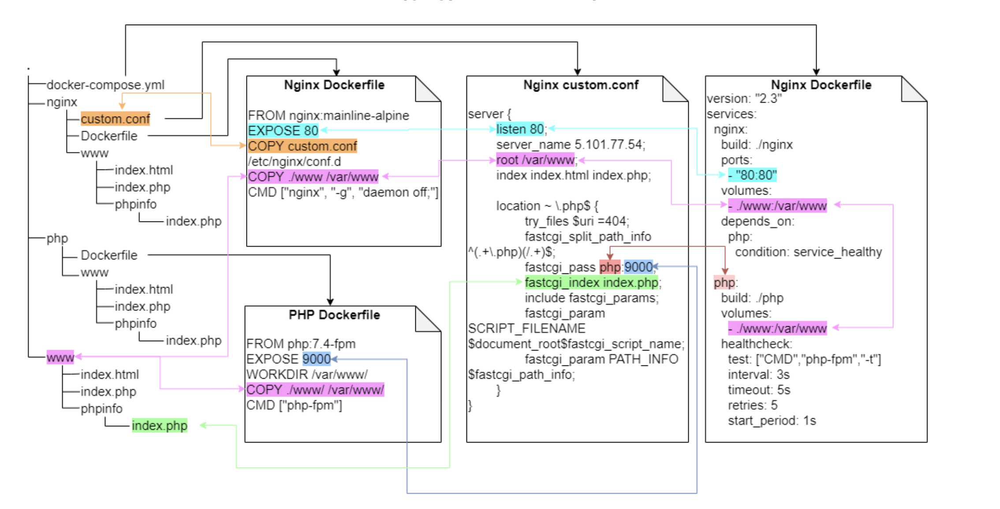

Infrastructure
Особенности
Временные особенности.
В работе учитывались особенности действия документов (сущностей) в рамках календарной работы и действия тех или иных документов. Все даты заменены на формат, применяемый в базе, а многие сроки действия документов переработы с учетом особенностей системы командами CURRENT_TIMESTAMP
JSON - объекты
Некоторые объекты в базе храняться как json объекты и работа с sql языком внутри них (установление текущей даты и времени) представляет некоторые особенности. В частности, с помощью команды jsonb_build_object и формирование массивов jsonb_build_array были сформированы и переработы некоторые сет на добавление специальных сущностей.
Kubernetes - k8s
Контроллеры
Deployments - контроллер, который управляет состоянием развертывания подов, которое описывается в манифесте, следит за удалением и созданием экземпляров подов. Управляет контроллерами ReplicaSet.
ReplicaSet - гарантирует, что определенное количество экземпляров подов всегда будет запущено в кластере.
StatefulSets - так же как и Deployments, управляет развертыванием и масштабированием набора подов, но сохраняет набор идентификаторов и состояние для каждого пода.
DaemonSet - гарантирует, что на каждом узле кластера будет присутствовать экземпляр пода.
Jobs - создает определенное количество подов и смотрит, пока они успешно не завершат работу. Если под завершился с ошибкой, повторяет создание, которое мы описали определенное количество раз. Если под успешно отработал, записывает это в свой журнал.
CronJob - запускает контроллеры Jobs по определенному расписанию.
Применение в работе
В дефолтном виде, в структуре проекта выделяются папки для хранения бинарников наших сервисов (описывается в разделе build), и требует наличие Dockerfile для описания работы контейнера. Можно использовать готовые образы для развертывания окружений, что мы и делаем на проектах.
В разделе image указываем пути к нащим образам в докер хабах (registry) откуда будем браз образы для docker. Переменные, необходимые для работы сервисов вынесены в отедльные файлы .env. Объеденены в отдельную "сеть" и прописаны порты внутреннее/внешние.
Жонглирование контейнерами
Отдельные контейнеры это хорошо, но зачастую, в жизни, никогда не бывает так просто. На помощь приходит инструмент docker-compose
Docker Compose — это инструментальное средство, входящее в состав Docker. Оно предназначено для решения задач, связанных с развёртыванием проектов. Облегчает переезд проекта на новое железо, или его масштабирование.
Datasets
Зачастую, сложные системы не существуют без специальной функциональной обвязкой, для проекта Trade это большой объем разного рода абстракций, входящих в друг друга или имея сложные связи-зависимости.
Для ускорения процесса разработки были прописаны датасеты, в виде SQL команды. Репозиторий с данными был загружен для удобства пользования командой.


Кэширование с Redis
Redis — мощное хранилище данных в памяти, широко используется для кэширования данных. В сочетании с Go, статически типизированным, компилируемым языком программирования, разработанным для простоты и эффективности, Redis может значительно улучшить производительность и масштабируемость приложений
Для удобства работы можно использовать разные клиенты, например, P3X Redis UI